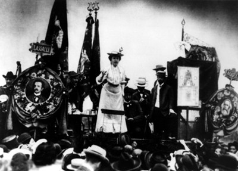
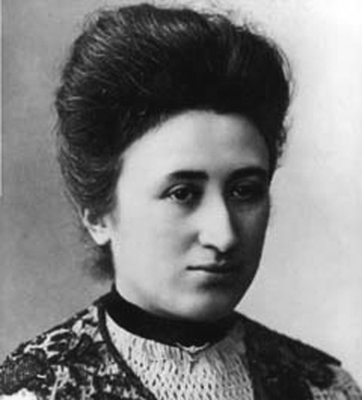

“Özgürlük, her zaman ve sadece
farklı düşünebilenler için özgürlüktür.”
Rosa Luxemburg
Hayatı boyunca kendisini bir işçi sınıfı üyesi olarak gördü ve uluslararası bir göçmen olarak yaşadı. Sosyal adaletin ve özgürlüğün sadece sosyalizmle elde edilebileceğine inanıyordu. Sosyalizmin ve komünizmin yükseldiği dönemde, ortaya koyduğu teorilerle tanındı. Öyle ki bu düşünceleri kendisini Lenin ve Stalin’le ayrı düşürecek kadar etkili oldu.
Birinci Dünya Savaşı sırasında dönemin sosyalistlerinden ayrılarak kurduğu Spartaküs Birliği, daha sonra Alman Komünist Partisi olacaktı. Spartakistler olarak bilinen grubun hem düşünce hem de aksiyon alanında lideri olarak, solcu devrimcilerin merkezi organı The Red Flag (Kızıl Bayrak) adlı gazeteyi kurdu. Savaşın ardından Spartakistlerin ayaklanması üzerine, kendisiyle birlikte Spartaküs Birliği’ni ve Kızıl Bayrak’ı kuran en yakın dava arkadaşı ve büyük aşkı Karl Liebknecht ile birlikte, monarşi askerleri tarafından öldürüldü.
Ölümünün ardından Liebknecht ile birlikte, hem Marksistlerin hem de demokrat sosyalistlerin sembolü haline geldi. Naaşı bir kanala atıldıktan aylar sonra bulundu; ancak yaklaşık 55 yıl sonra, portre figürü devlet tarafından pulların üzerine basılacaktı. Bir Marksist teorisyen, sosyalizm ideologu ve hareketli bir devrimci olan ve düşünceleriyle dünyadaki sosyalist hareketleri etkileyen bu kadın, ‘Kızıl Rosa’ lakaplı Rosa Luxemburg’dan başkası değildi.
Kendini ‘Sosyalist Hacı’ olarak tanımlayan Rosa, 1870 veya 1871 yılında, işgal altındaki Polonya’nın Ruslar tarafından kontrol edilen kısmında bulunan Zamosc’ta Yahudi bir ailenin çocuğu olarak dünyaya geldi. Kereste taciri olan babası Eliasz Luxemburg ve annesi Line Löwenstein’ın beşinci çocuğuydu.
Ailesi 1873’te, Rosa henüz iki buçuk yaşındayken Varşova’ ya taşındı. Beş yaşındayken ağır bir kalça eklemi rahatsızlığı geçirdi ve tam bir yıl yatağa mahkûm oldu. Lakin bu zorunlu yatak istirahatını boşa geçirmeye niyeti yoktu ve adam olacak çocuk daha o yaştan belli olacaktı. Yataktan kalktığında, kendi kendine okuma yazma öğrenmişti ama hastalığı kalçasında kalıcı bir sorun bırakmıştı. Ölene kadar aksak yürüyecekti.
Rosa’nın çocukluğunda Polonya bağımsız bir devlet değildi. Viyana Konferansı’nda galip devletler tarafından paylaşılmış; batısı Beyaz Rusya’ya, güneydoğusu Avusturya’ya, Rosa’nın yaşadığı orta Polonya ile doğu ve kuzeydoğu şehirleri ise Rusya’ya verilmişti. On üç yaşındayken Varşova’ da ikinci sınıf bir kız lisesine girdi. Okula ağırlıkla Rus yöneticilerin çocukları kabul ediliyordu ve dersler Lehçe değil, Rusçaydı. Öğrenciler aralarında sadece Rusça konuşabiliyorlardı. Küçük Rosa’nın tek sıkıntısı dil değildi. Yahudi olmasından kaynaklanan bir baskıyla daha karşı karşıyaydı. Kişiliğinin ayrılmaz parçası olacak muhalif tavırlarını, daha o günlerde sergilemeye başlayacaktı. Mezun olduğunda karnesine ‘otoriteye karşı muhalif tavrı yüzünden öğretmenlerle sorun yaşadığı’ şeklinde bir not düşülmüştü.
Arkadaşları evcilik oynarken o imparatora sesleniyordu
Alman İmparatoru I. Wilhelm 1884’te, Rosa on üç yaşındayken, Varşova’ya resmi bir ziyarette bulundu. Bu nedenle bir şiir yazan Rosa’nın mısraları, daha o yaşlarda otoriteye karşı isyankâr ruhunu ortaya koyuyordu:
Nihayet göreceğiz seni
Batı’nın gücü
Belki ben bile izleyeceğim
Saksonya bahçelerinde dolaşan seni
Sakın Saray’a geleceğimi sanma
Aklıma bile getirmem aslında
Sizin gibilere saygılarımı kanıtlamayı
Bilmek isterdim yoksa
Neler konuşulur ortamınızda
Senli benli konuşuyorsundur çarla
Politikadan hiç anlamam ya,
Fazla uzatmayayım, ama
Sevgili Wilhelm sen de sakın unutma:
Söyle kurnaz Bismarck soysuzuna
Barışın ırzına geçmeye bilenmesin
Ey Batı’nın İmparatoru
Bunu Avrupa için yapasın.
On beş yaşına gelmişti ve kanı kaynıyordu. Siyasetin gizemli dünyası, onu bir mıknatıs gibi kendine çekiyordu. Rusya yanlısı partilere muhalif olarak kurulmuş sol görüşlü Proletariat (İşçi) Partisi’ne gitti. Parti o sıralarda özellikle lise ve üniversite öğrencilerinin gözdesiydi. Bu arada Rosa okulunu 1887’de birincilikle bitirdi; ancak muhalif tutumu yüzünden okulunun en yüksek ödülü olan altın madalya kendisine verilmedi. Bunu hiç önemsemedi, onun için hayatta ‘takdir edilmekten’ daha önemli şeyler vardı.
İdamlar gözünü korkutmadı
Siyasete ilk adımını genel bir protesto gösterisi organize ederek attı; ancak bu ayaklanma sert bir şekilde bastırıldı ve partinin liderlerinden dördü idamla cezalandırıldı. Parti dağıtıldı ve Rosa gibi geride kalan diğer lider adayları gizli gizli bir araya gelmeye başladı. Ruslar, Proletariat mensuplarına nefes aldırmamakta kararlıydı. Operasyonlar yeniden başlayınca, kaçmaktan başka çareleri kalmamıştı. Rosa henüz 18’ini doldurmamıştı ki Polonya İşçiler Birliği yöneticileriyle birlikte, saman yüklü bir at arabasına saklanarak Almanya-Polonya sınırından İsviçre’ye kaçtı. Yeni bir hayata başlıyordu...
Rosa, Anatoli Lunacharsky ve Leo Jogiches gibi sosyalistlerle birlikte Zürih Üniversitesi’ne girdi. Felsefe, tarih, siyaset, ekonomi ve matematik alanında dersler görmeye başladı. İdari bilimler, Ortaçağ, ekonomi ve borsa krizleri konularında uzmanlaştı. Marks ve Engels’in yapıtlarıyla da bu dönemde tanışacaktı. 1892’de hukuk okumaya başladı. Aynı yılın sonlarına doğru Birleşik Polonya Sosyalist Partisi (PSP) kuruldu ve bütün mülteci gruplar bu partiye katıldı. İsviçre o günlerde Rus devrimci Marksizm hareketinin en önemli merkezlerinden biriydi.

Rosa Luxemburg aynı zamanda ciddi bir aktivistti.
1893’te Leo Jogiches ve Julian Marchlewski ile birlikte PSP’nin milliyetçi politikalarına karşı koymak için Sprawa Robotnicza (İşçi Davası) gazetesini kurdu. Bağımsız bir Polonya devletinin ancak Rusya, Avusturya ve Almanya’da gerçekleşecek sosyalist bir devrimle var olabileceğine inanıyordu. Ve mücadelenin sadece bağımsız bir Polonya için değil, aynı zamanda kapitalizme karşı yürütülmesi gerektiğini düşünüyordu. Rosa, ‘R. Kruzsynska’ takma adını kullanarak gazetenin editörlüğünü de üstlenmişti.
Bu dönemde Sosyalist Enternasyonel’in Üçüncü Kongresi Zürih’te gerçekleştirildi. Gazete ile bağlantılı grup, kongrede Polonya delegasyonunun bir parçası olarak temsil hakkı istedi. Ancak bu kabul edilmedi. Rosa Luxemburg, sosyalizm düşüncesi altında ulusların kendi kararlarını kendilerinin alabilmesi düşüncesine karşı çıkarak Vladimir Lenin ile ters düşmüştü. Leo Jogiches, Julian Marchlewski ve Adolf Warszawski ile birlikte kongrenin ardından kendini Proletariat’ın devamı olarak gören Polonya Sosyal Demokrat Partisi’ni (SDKP) kurdu.
Hayatının büyük kısmını Almanya’da geçirmesine rağmen Polonya Sosyal Demokratları’nın başlıca teorisyeni olmuş ve Jogiches’in yardımıyla partisini yönetmişti. Polonya Komünist Partisi kurulana kadar, bu dört kişi ana politikaları belirledi. 1895’te takma isimle, kendi sosyalist düşüncelerini içeren ve sosyalizmde ulusalcılık sorunuyla ilgili ilk açıklamasını yaptığı bir kitap yayınladı. Sosyalizm içinde milliyetçiliğin (özellikle Polonya milliyetçiliğinin) vurgulanmasının, çalışan sınıfları yoğun ve saf sosyalizm anlayışından uzaklaştıracağını düşünüyordu. Sosyalistlerin milliyetçi düşüncelere izin vermesinin, onları siyasal açıdan güçsüz bir burjuvaziye bağlamaktan başka işe yaramayacağını savundu. Bu düşünceleriyle Liebknecht’ten Lenin’e kadar birçok sosyalistle ayrı düştü. Eserleri, sosyalistler tarafından sert biçimde eleştirildi.

Düşünce tarihine silinmez bir iz bırakan Rosa Luxemburg
1898’de Gustav Lübeck ile evlendi ve Alman vatandaşlığını kazanarak Berlin’e taşındı. Almanya’ya geliş sebeplerinden biri ve belki de en önemlisi burayı politik eylemin en çok başarıya ulaşacağı yer olarak görmesiydi. Berlin’de Alman sosyal demokrat hareketi için çalışmaya başladı, Dresden ve Leipzig’de parti gazetelerinde yazılar yazdı. Bu arada dava arkadaşı Leo Jogiches ise Zürih’te kalmıştı.
Dinleyicileri büyüleyen ve partisinin birçok taraftar ve oy kazanmasını sağlayan bir hatip ve gazeteci olarak Rosa, Alman İmparatorluğu’nun hemen hemen her yöresinde Sosyal Demokrat Parti için halkı harekete geçirmeye yönelik geziler düzenledi. SPD’nin sol kanadının lideri gibi görülüyordu.
Alman Parlamentosu’nun seçim kampanyası sırasında yaptığı bir konuşmada 20 yıl önce de hicvettiği Alman İmparatoru Wilhelm’e “Alman işçilerinin yaşamlarının garanti altında ve iyi olduğundan söz eden adamın gerçeklerden hiç haberi yok” diye sesleniyordu. Ancak bu sefer ‘Majestelerine’ hakaretten üç aylık hapis cezasına çarptırıldı ve 1904-1906 arasında siyasi faaliyetleri ve görüşleri nedeniyle üç kez hapse girdi. 1907 yılının bir bölümünü Zwickau’da bir hapishanede geçirdi. Saksonya Kralı Albert öldüğünde çıkarılan genel bir afla serbest kaldı; ancak “dünyadaki hiçbir kral tarafından kendisine bir şey hediye edilsin istemediği” için hapishaneden çıkmayı reddedince, zorla çıkarıldı.
1905 Rus Devrimi sırasında sosyalizmin, politik ve ekonomik ilişkilerin bizzat işçiler tarafından daha büyük bir demokratik kontrole dönüştürüldüğü bir devrim süreci olduğu tezini öne sürdü. Rus Devrimi’ni büyük bir umut olarak görüyordu. 1906 yılında Varşova’da tutuklandı; ancak sağlık sebeplerinden dolayı serbest bırakıldı.
Rosa, Rus sosyal demokratlarının Mayıs 1907’de Londra’da gerçekleştirdikleri 5. Parti Toplantısı’na SPD’yi temsilen katıldı. Aynı yıl SPD’nin Berlin’deki Merkez Parti Okulu’nda doçent oldu ve 1914’e kadar burada ders verdi, siyasi bir silah olarak genel grev hakkındaki düşüncelerini geliştirdi. Bu dönemde iki büyük kuramsal eseri olan Ulusal Ekonomiye Giriş ve Sermaye Birikimi’ni yazdı. Kapitalizmin lanetli olduğunu ve ekonomik sebeplerden dolayı çökmeye mahkûm olduğunu savunuyordu.
Birinci Dünya Savaşı’nın başlamasıyla esen milliyetçi rüzgâr, SPD’nin de böyle bir eğilime yönelmesine neden oldu; ancak Luxemburg milliyetçi fikirlere kesinlikle karşıydı. SDP’nin Almanya’nın savaşa girmesini desteklemesine çok kızmıştı. Bu sebeple partiyle olan tüm ilişkisini kesti ve savaş sırasında yaşamının büyük kısmını hapiste geçirdi.
Hapishanede kaleme aldığı mektupların çoğunu arkadaşı ve sekreteri Mathilda Jacob’a hitaben yazıyor, Jacob da bunların dışarı çıkmasını sağlıyordu. Ekim Devrimi’ni, tüm dünyada yaşanacak devrimin öncüsü olarak görüyordu ve hapisteyken Spartakusbriefe (Spartaküs Mektupları) ile Die Russische Revolution (Rus Devrimi) adlı eserlerini kaleme aldı. 1916 yılında yayınladığı The Junius Pamphlet (Junius Broşürleri) adlı eserinde Sosyalizm ile Barbarizm arasındaki seçimin, işçi sınıfının kararlı hareket etmesi gerektiği dünyanın tarihi açısından bir dönüm noktası olduğunu savundu.
Ilımlı sosyal demokratlarla yaşadığı farklılıklar sonucunda Clara Zetkin, Franz Mehring ve Karl Liebknecht ile birlikte 1916 yılında Spartaküs Birliği’ni kurdu. Birlik, iki yıl sonra Almanya Komünist Partisi oldu.
Rosa, Ekim 1916’dan Temmuz 1917’e kadar tekrar hapse girdi. Eylül 1918 tarihli Spartaküs mektubunda Bolşevikleri oldukça sert bir şekilde eleştiriyordu. 1917’de Spartaküs Birliği, savaş karşıtı ve eski SDP’li olan Karl Kautsky’nin kurduğu Bağımsız Sosyal Demokrat Parti (USDP) ile birleşti. Kasım 1918’de Kayser’in görevinin sona ermesinin ardından USDP ve SDP yeniden iktidara geldi ve bunu Kiel’de Alman Devrimi’nin başlaması takip etti. Almanya’nın birçok yerinde savaşa ve monarşiye son vermek için Alman işçiler ve askerlerin oluşturduğu konseyler kuruldu. USDP bu konseyleri destekledi.
Breslau’daki cezaevinden tahliye olan Luxemburg, kendisinden bir gün sonra hapisten çıkan Liebknecht ile birlikte Spartaküs Birliği’ni yeniden organize etti ve Red Flag adlı bir gazete kurdu. Tüm siyasi tutukluların salıverilmesini ve idam cezasının kaldırılmasını istiyorlardı. Bağımsız Sosyalistler ve Uluslararası Komünistler (IKD) ile birleşen Spartaküs Birliği, Karl Liebknecht ve Rosa Luxemburg liderliği altında Almanya Komünist Partisi oldu.
Ocak ayıyla birlikte ikinci bir devrim dalgası başlamıştı; ancak Rosa, Liebknecht’in aksine bu hareketi desteklemedi ve Berlin’de gerçekleşen, hükümet karşıtı Spartakist ayaklanmasına gönülsüzce katıldı.
Başarısızlıkla sonuçlanan bu hareket, Adolf Hitler için de belirleyici bir dönüm noktası olmuştu. Sosyal Demokrat lider Friedrich Ebert, ayaklanmaya karşılık olarak, milliyetçi ve sağ görüşlü Freikorps askerlerine sol kanatlı bu devrimi bastırma emrini verdi. Luxemburg, Karl Liebknecht ve Wilhelm Pieck ile birlikte tutuklandı. Pieck kaçmayı başarırken Luxemburg ve Liebknecht hapishaneye götürüldükleri 15 Ocak’ı 16 Ocak’a bağlayan gece Alman Freikorps askerleri tarafından öldürüldü.
Ölüm emri, kendilerini sorgulayan Yüzbaşı Waldemar Pabst tarafından verilmişti. Luxemburg’un cesedi Landwehr kanalına atıldı ve ancak Mayıs ayında Berlin Hayvanat Bahçesi’nin bir kanalında bulunabildi. Liebknecht’in cesedi ise isimsiz olarak morga kaldırıldı. Bundan 55 yıl sonra, 15 Ocak 1974’te Federal Almanya Ulaştırma Bakanlığı Rosa Luxemburg anısına özel bir posta pulu çıkaracaktı.
Öldürülmesinden dolayı Waldemar Pabst değil ama sadece bir Freikorps askeri, Otto Runge 2 yıl hapis yattı. Pabst, 1962 yılında Der Spiegel dergisine verdiği röportajda iki SPD lideri Savunma Bakanı Gustav Noske ve Şansölye Friedrich Ebert’in, Luxemburg’a yönelik hareketlerini onayladığını söylemişti.
Luxemburg’un sevgilisi Leo Jogiches de 1919’da öldürüldü. Ancak gönül ilişkileri zaten 1906’da bitmişti. Leo Jogiches, ölümünden kısa bir süre önce Clara Zetkin ve Mathild Jacob ile birlikte Luxemburg’un eserlerini toplayarak yayınlamaya karar vermişti. Ancak proje, Lenin’in Luxemburg hakkındaki eleştirel düşüncelerinden dolayı yavaş ilerledi. Lenin, Luxemburg’un milliyetçi ideolojiyi hafife aldığını, Komünist Parti’nin rolünü zayıflattığını ve toplu hareketin gücüne gereğinden fazla önem verdiğini düşünüyordu. Luxemburg da Lenin’in ulusların kendi kaderlerini tayin (self-determinasyon) ilkesini kabul etmiş olmasını eleştiriyordu. Daha sonra Stalinci akımlar da Luxemburg’un düşüncelerini eleştirdiler. Luxemburg’un toplanan eserleri, 1970-75’li yıllara kadar Demokratik Almanya’da piyasaya çıkmadı.
1970’li yıllarda Luxemburg’un çalışmaları ve düşünceleri, ciddi bir biçimde ele alınarak değerlendirilmeye başlandı. Teorileri, sosyal demokrasi veya komünizme bir alternatif olarak düşünülüyordu. 1980’li yıllarda Marksist çalışmalar çekiciliğini kaybettiğinde Luxemburg’un düşünceleri özellikle feminist teorisyenler arasında hâlâ tazeliğini koruyordu. Luxemburg hiçbir zaman kadın haklarına yönelik hareketlerin içinde yer almamıştı. Ona göre kadınların özgür olmaları için, kapitalizmin baskısından kurtulmaları gerekiyordu. Ancak sosyalist özgürlük de kadınların özgürlüğü olmadan imkânsızdı.
Rosa Luxemburg’un ölümünden yıllar sonra bile hâlâ popüler olmasının sebebi, muhtemelen şu sözlerinde saklıydı:
“Sosyalizmi tembel, uçarı, egoist, düşüncesiz, kaygısız insanlarla gerçekleştiremezsiniz. Sosyalist bir toplumun, kendi bulunduğu yerden, genel refah için tutku ve hevesle dolu, yoldaşı insanlar için fedakârlık ve duygudaşlıkla dolu, en zoru gerçekleştirmeye kalkışacak cesaret ve kararlılıkla dolu insanlara ihtiyacı vardır.”
NOTLAR